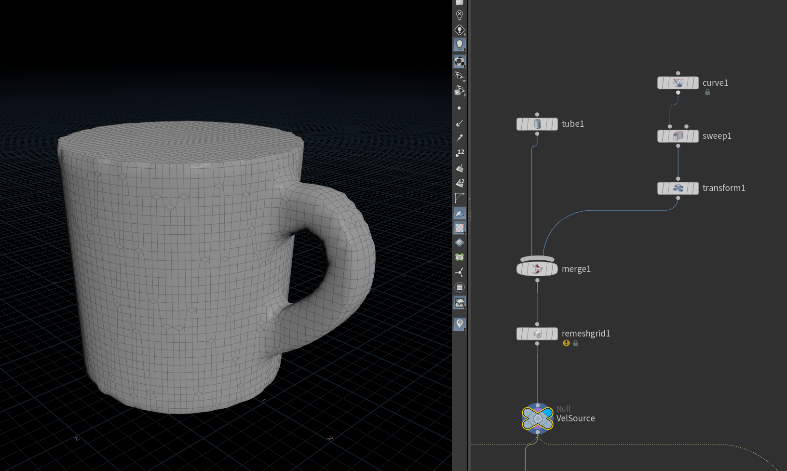
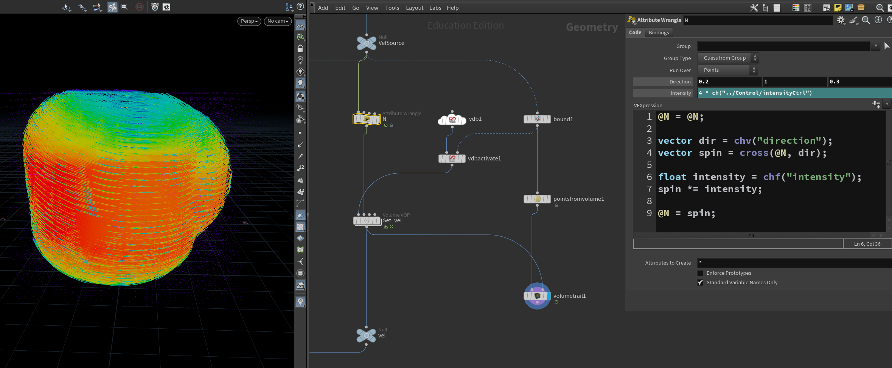
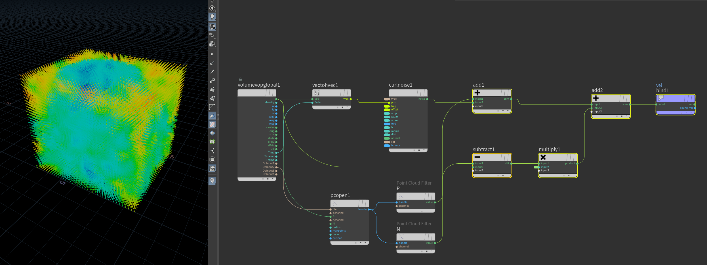
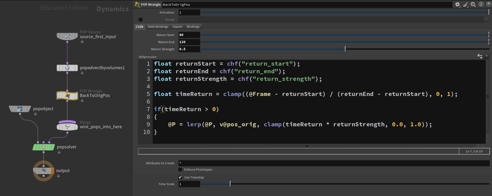
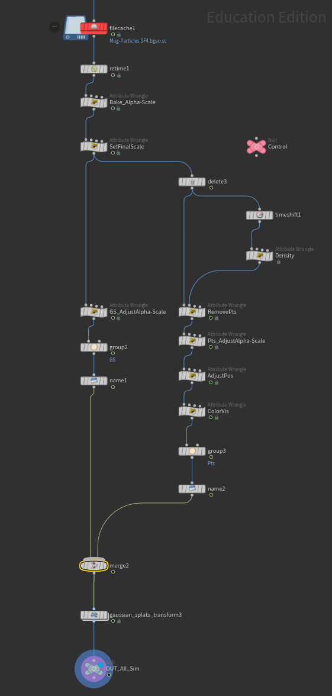
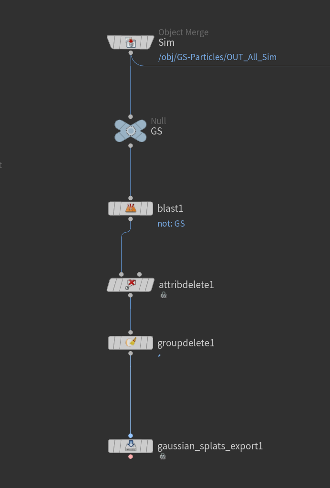
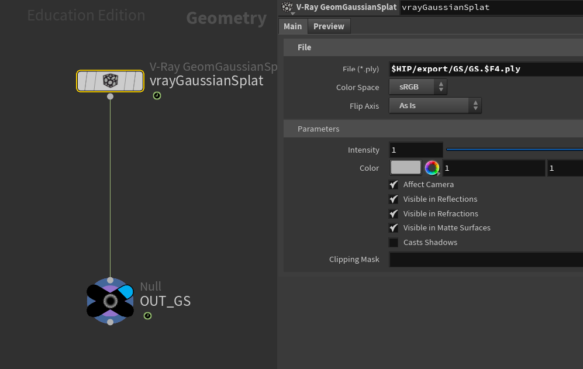

Week 01 - Gaussian Splat with Particles Simulation
Mar 23 - 29, 2026
Spring Quarter 2026 Weekly Plan
Week 01
Explore Gaussian Splat with Particles Simulation in Houdini
Fix alpha channel and depth pass of the Gaussian Splat soil
Week 02
Continue testing Gaussian Splat with Particles Simulation in Houdini and add stylization to the particles created from splat data
Hand test assets to pipeline team for testing Houdini - UE / Houdini - TD pipeline
Week 03
Explore stylized big scale pyro simulation
Week 04
Continue testing stylized big scale pyro simulation
Hand test assets to pipeline team for testing Houdini - UE / Houdini - TD pipeline
Discuss storyboard and shot list
Week 05
Create FX asset lists
FX first pass
Hand first pass assets to pipeline team for testing Houdini - UE / Houdini - TD pipeline
Week 06
Refined FX assets and optimization for LED volume
Create assets with different approach for LED volume, such as pre-rendered effects card and optimization for real-time
Hand second pass assets to pipeline team for testing Houdini - UE / Houdini - TD pipeline
Week 07
Polish FX assets for LED Volume
Load Test
Determine approach for final result
Week 08
Adjust, fix or find solution to make sure that the scenes and assets will work nicely on a real LED volume shoot
Polish FX assets look development
Finalize showcase reel for final presentation
Week 09
Polish Final deliverables
Presentation rehearsal
Final Presentation
Week 10
End of quarter warp up
Project archive
Project summarize and documentation
Plan for next step
Gaussian Splat with Particles Simulation
Use some data from Gaussian Splat, such as points position, color attribute and scale with particles simulation in Houdini
Explore solutions for Gaussian Splat rendering in Houdini
Rendering: Particles with Karma XPU, Gaussian Splat with V-Ray Houdini
Process

Create a proxy geometry for using as a velocity source

Use VEX code to create a spinning velocity from Normal attribute (@N)

Final velocity field: Combine spinning with noise and push-in vector (to prevent particles from expanding to wide)

Inside POPNet, use POP Wrangle to force the particles to go back to their original position (mug shape)

Mix Gaussian Splat with normal particles by animating Alpha and scale attribute to make Gaussian Splat disappear when particles show and vice versa

Cache out Gaussian Splat point to prepare for rendering

Read simulated Gaussian Splat data back in with V-Ray Gaussian Splat node to render with V-Ray
V-Ray for Gaussian Splat Rendering
Ray-traced: Splats are treated as semi-transparent geometry that light rays intersect
Real shadows cast onto and from splats, real reflections/refractions with scene geometry
Has Alpha channel
Only supported in Render Operator context (ROP/Out) in Houdini, not Solaris